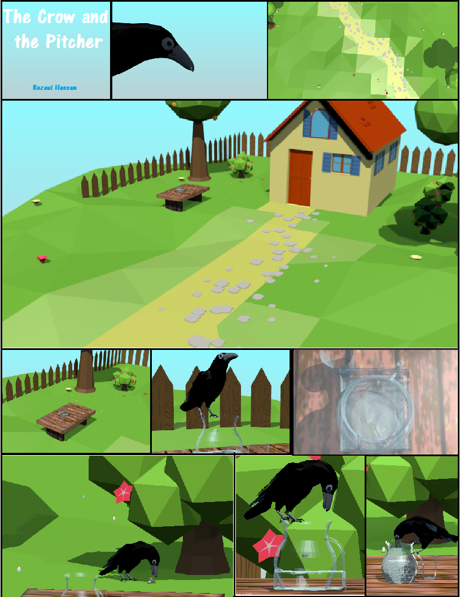
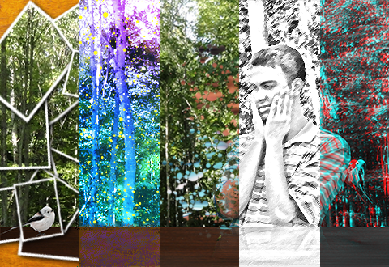
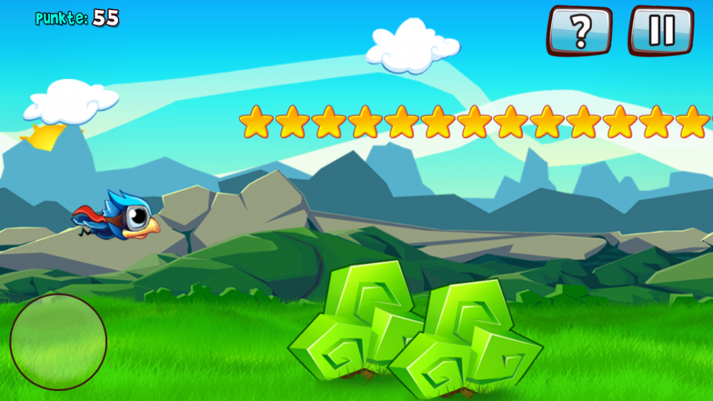
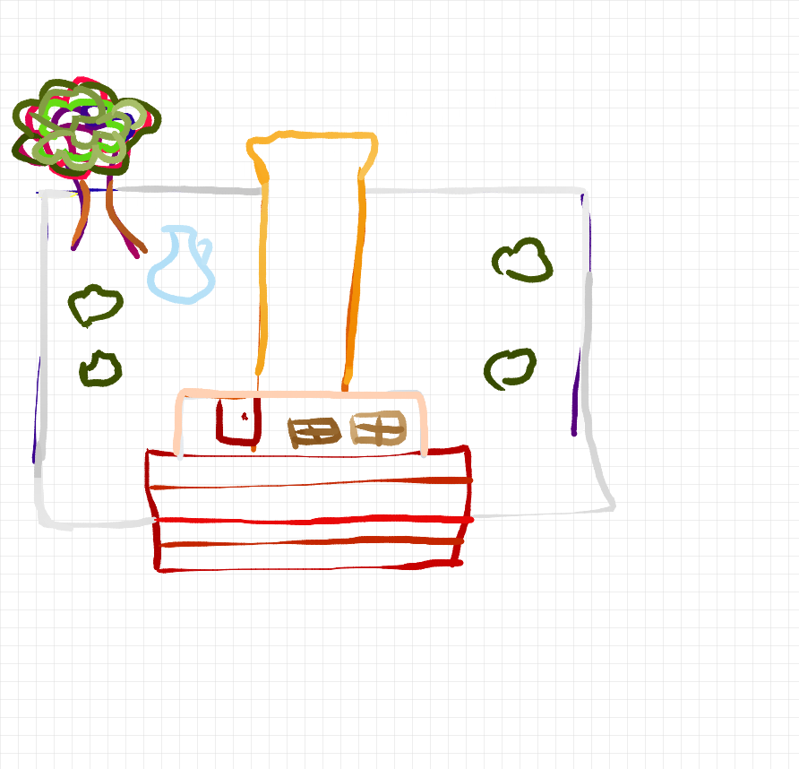
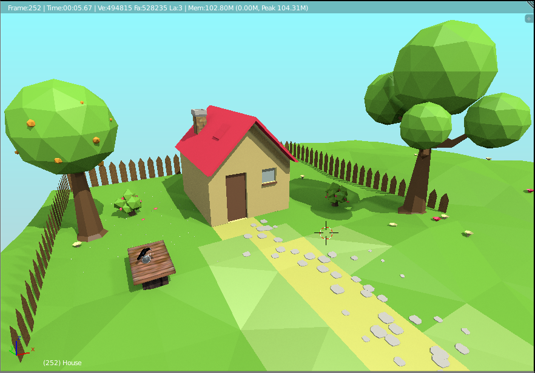
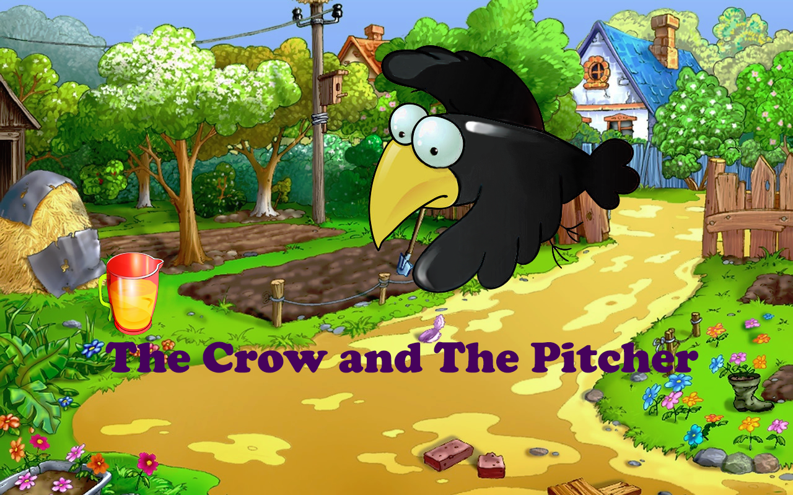
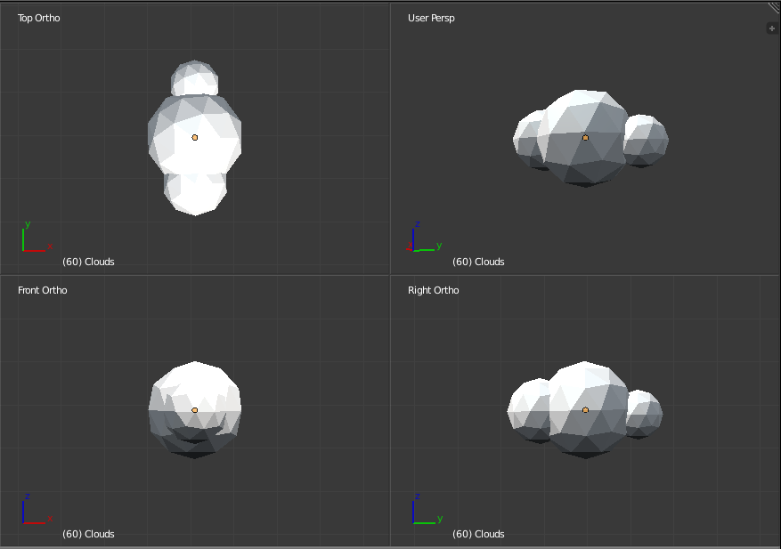
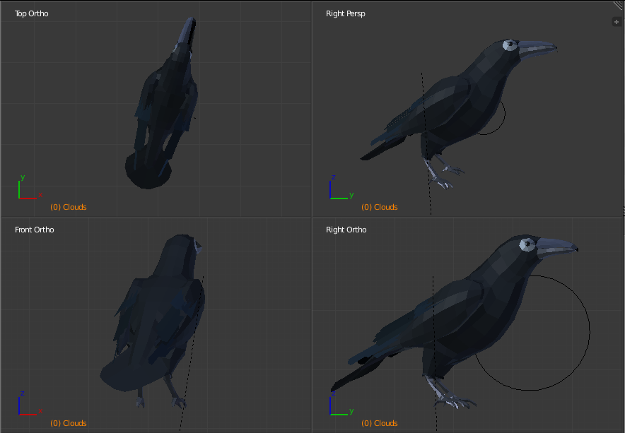
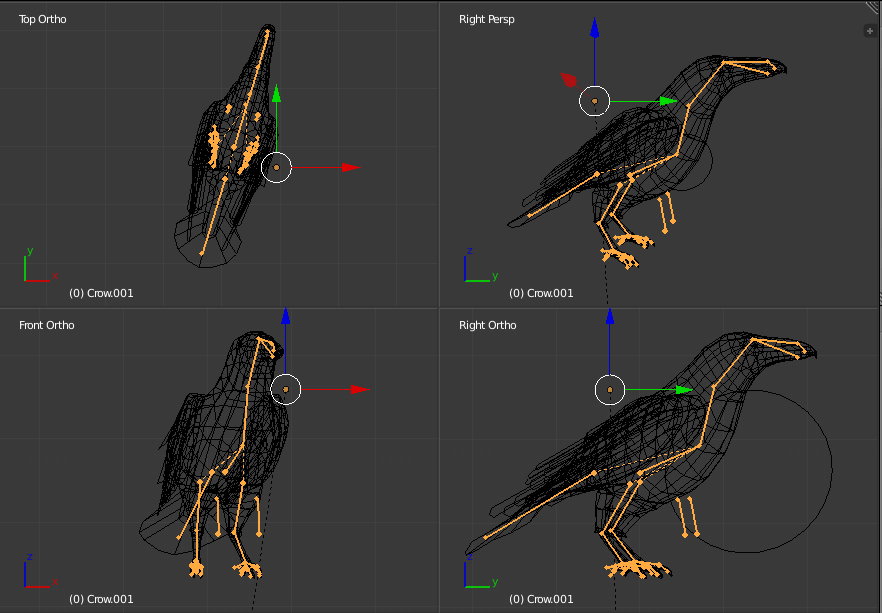
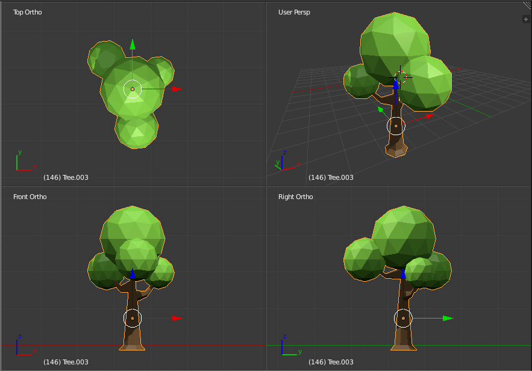

A look at storyboarding for "The Crow and the Pitcher".


My Name is Rezaul Hassan. This is a collection of my projects in Art and Code. I hope you enjoy looking through it.
Title: "The Crow and the Pitcher"
Synopsis:
The Crow and the Pitcher is an Aesop’s Fables that tells of a thirsty crow who finds a pitcher with too little water for the crow to reach with its beak and drink. The crow fails to topple over the pitcher to let out the water. It sees a pebble and gets an idea. It begins to put pebble after pebble into the pitcher. Eventually, the water rises to the top so the crow may drink.
Objective:
To use graphics, video, and animation to illustrate the ancient observation of Corvidae intelligence while relating an equally ancient story of morals. Audio will provide sound effects and background music. A 3D model of the crow, pitcher and environment will be built.
Audience:
The intended audience for this piece would be children from pre-k to elementary school but the content presents many lessons still available to a wider audience, some of which are listed below:
"Thoughtfulness is superior to brute strength.”
"Necessity is the mother of invention.”
“Where there's a will, there's a way.”
“Little by little does the trick.”
Corvids are the most intelligent birds: they are self-aware and capable of making and using tools to problem solve like humans.
Sources:
Description of Story
Movement Reference Clip
Movement Reference Clip 2
A Completed 3D Project
Reference Illustrations:




A gallery of works from "The Crow and the Pitcher"


Title Screens:

3D stills:
From "The crow and the Pitcher":



